Checklist Memilih Vendor Souvenir Kantor untuk Tim Purchasing
Panduan praktis untuk menilai vendor dari sisi kualitas sample, SLA produksi, hingga ketepatan pengiriman.
Read More
 18 April
18 April
Panduan praktis untuk menilai vendor dari sisi kualitas sample, SLA produksi, hingga ketepatan pengiriman.
 14 April
14 April
Simulasi anggaran souvenir kantor dari 100 hingga 5.000 peserta agar keputusan pengadaan lebih presisi.
 10 April
10 April
Format brief yang mempercepat vendor memahami kebutuhan, menyusun quotation akurat, dan memotong siklus revisi.
24 April
Panduan utama memilih metode branding berdasarkan material, kompleksitas logo, dan target kesan brand.
 21 April
21 April
Checklist timeline dari approval sample, produksi massal, hingga distribusi agar tidak melewati deadline event.
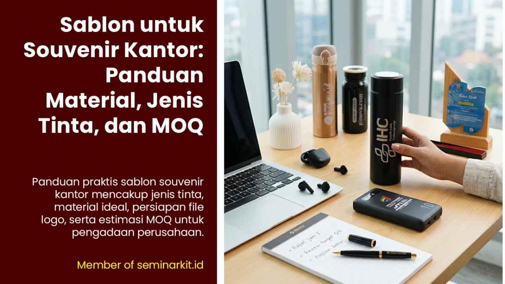
24 AprilPanduan sablon lengkap dari jenis tinta, material produk, hingga struktur MOQ untuk pengadaan perusahaan.
 24 April
24 April
Panduan utama untuk menentukan kapan perusahaan memakai merchandise, corporate gift, atau hampers.
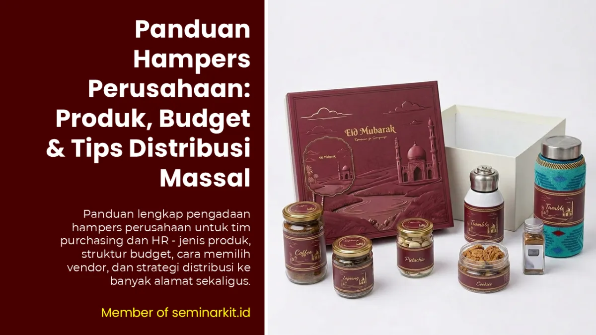
24 AprilLangkah lengkap menyusun program hampers perusahaan dari kurasi isi hingga pengiriman multi alamat.
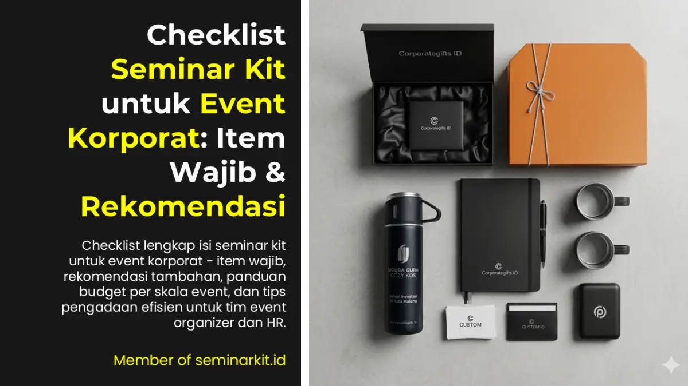
24 AprilChecklist item inti dan pelengkap seminar kit agar event korporat terasa lebih profesional dan terstruktur.
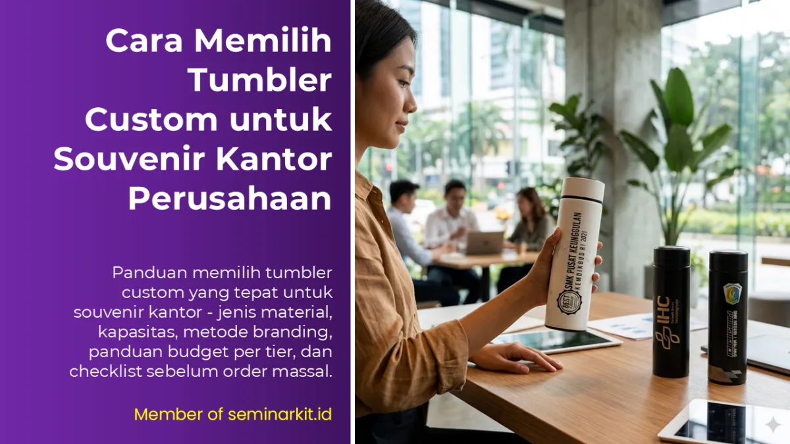
24 AprilPanduan material, kapasitas, branding, dan quality check tumbler custom sebelum produksi massal.
 24 April
24 April
Susun welcome kit karyawan baru yang fungsional, berkesan, dan sesuai budget per tier jabatan.
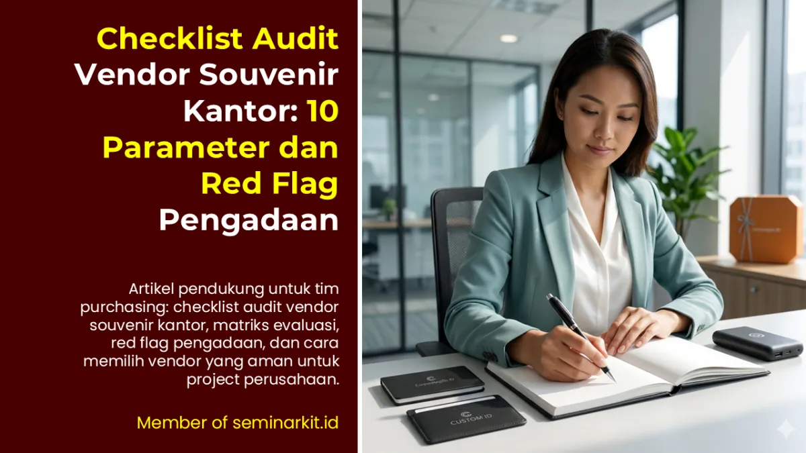
24 AprilPanduan pendukung audit vendor untuk tim purchasing agar keputusan pengadaan lebih objektif dan minim risiko.
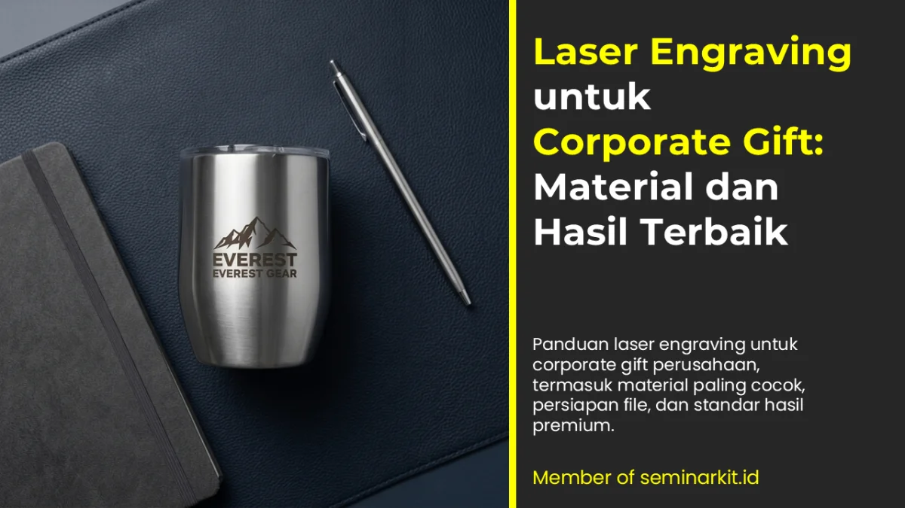
24 AprilStrategi memilih material dan standar file agar hasil laser engraving terlihat premium dan tahan lama.
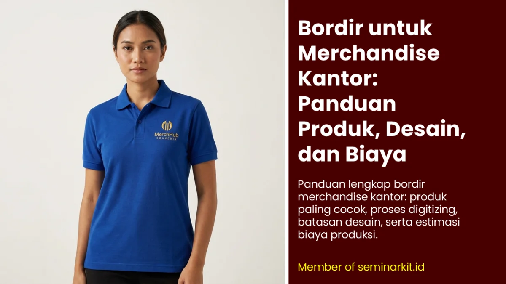
24 AprilPanduan digitizing, batas teknis desain, serta estimasi biaya bordir untuk produk tekstil korporat.
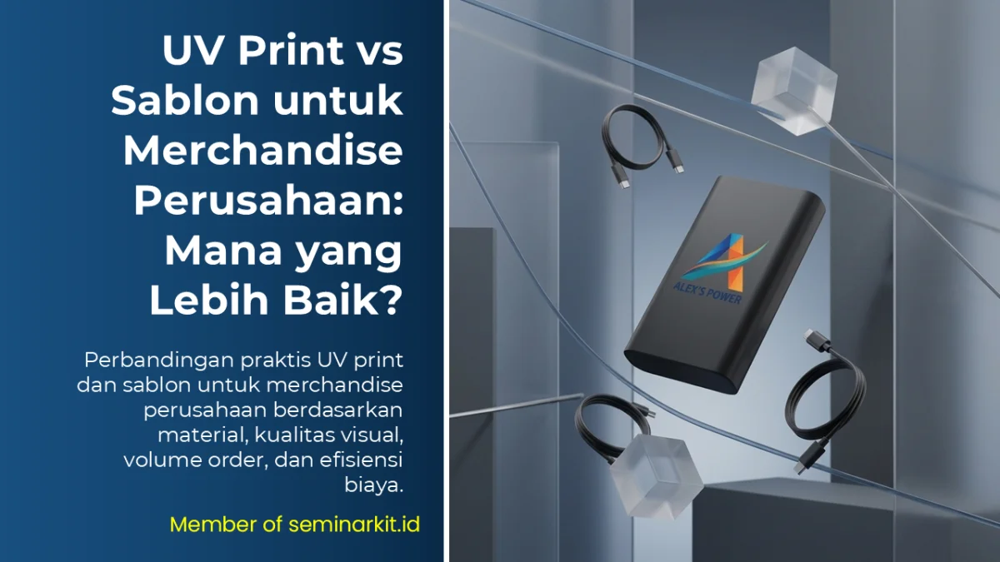
24 AprilPerbandingan praktis UV print dan sablon berdasarkan material, kualitas visual, dan skala volume order.
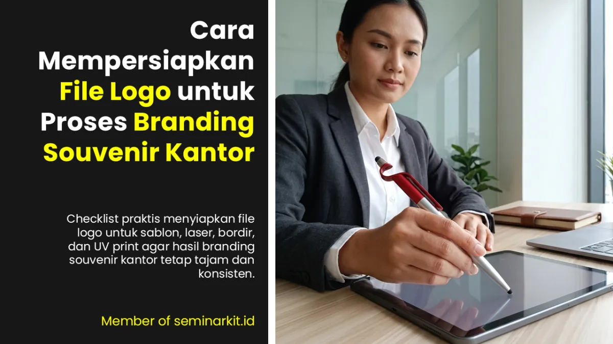
24 AprilChecklist format file, mode warna, dan standar final sebelum logo dikirim ke vendor produksi.
24 April
Panduan pengadaan souvenir kantor Surabaya untuk perusahaan, BUMN, kampus, dan instansi dengan layanan distribusi luas.
24 April
Vendor souvenir kantor Malang untuk kebutuhan kampus, perusahaan, dan instansi dengan format paket yang fleksibel.
24 April
Panduan vendor souvenir kantor Kediri untuk corporate gift, hampers, dan merchandise program perusahaan.
24 April
Panduan vendor souvenir kantor Jakarta untuk corporate gift, merchandise event, dan distribusi skala nasional.
24 April
Vendor souvenir kantor Denpasar Bali untuk kebutuhan event MICE, hospitality, dan corporate gift premium.
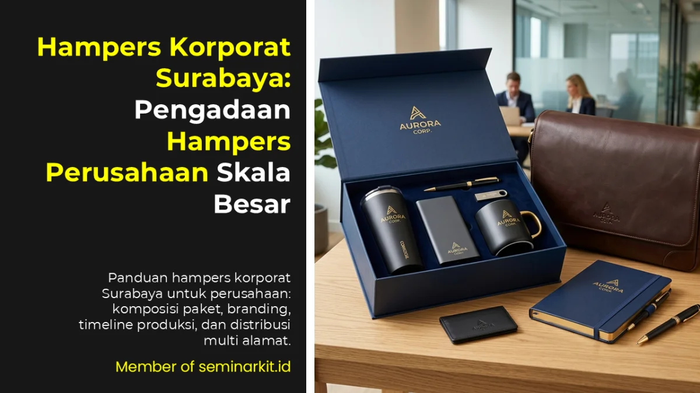
24 AprilPanduan lengkap hampers korporat Surabaya dari kurasi paket hingga distribusi multi alamat.
April 24
Checklist seminar kit Malang untuk kampus dan korporat agar paket peserta lebih fungsional dan siap pakai.
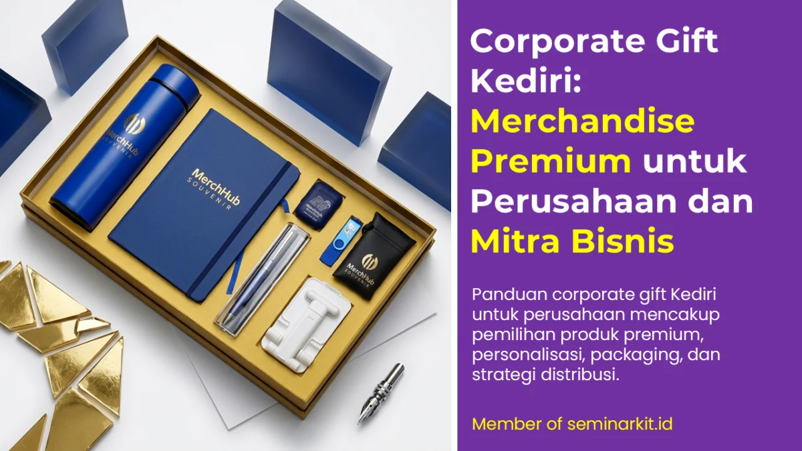
24 AprilPanduan corporate gift Kediri untuk program apresiasi mitra bisnis dengan standar kualitas premium.
 24 April
24 April
Panduan tumbler custom Jakarta dari pilihan material, teknik branding, hingga strategi volume order.
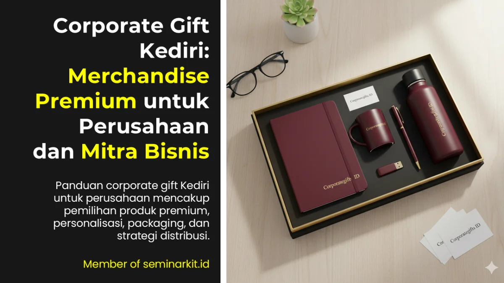
24 AprilPanduan merchandise custom Bali untuk event MICE, hospitality, dan kebutuhan program eco-friendly.
24 April
Panduan memilih material, teknik branding, dan MOQ tumbler custom untuk kebutuhan perusahaan.
24 April
Strategi pembagian paket peserta dan narasumber agar event kampus lebih rapi dan terkontrol.
 24 April
24 April
Panduan tier gift untuk peserta reguler, VIP, sponsor, dan narasumber seminar bisnis.
24 April
Pilihan souvenir seminar pendidikan berdasarkan skala acara dan struktur anggaran institusi.
24 April
Rekomendasi merchandise wisuda kampus yang berkesan dan tetap relevan dipakai setelah acara.
24 April
Panduan komposisi seminar kit dari tier basic hingga premium dengan estimasi harga terukur.
24 April
Cara memilih gift narasumber yang personal, elegan, dan sesuai konteks acara formal.
24 April
Panduan welcome kit untuk karyawan baru dengan sistem repeat order yang memudahkan tim HR.